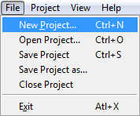
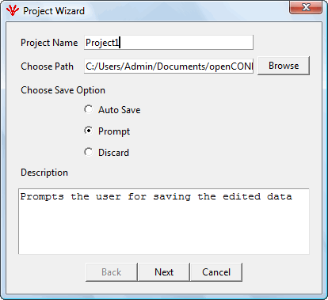
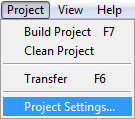
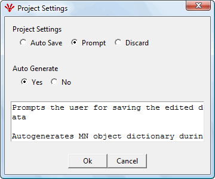
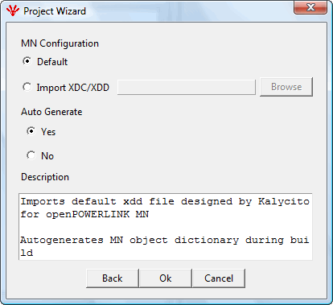
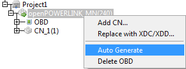

New project creation can be done in two ways :
a) Launch openCONFIGURATOR from Start -> All Programs -> openCONFIGURATOR. The user can create a new project or open an existing project as shown in Figure.
b) From the top menu bar File -> New Project

Project Name - In the Project Wizard window, the user can enter any name provieded the maximum limit of the Project Name is 32 characters and spaces are not allowed.
Project Location - The User can select any location by clicking the browse button.

Project Save Options
In the Project Wizard window, the user has to select a data save option from the following three options:
Auto Save
In this mode, the tool will automatically save the data whenever the user moves the mouse and clicks on the tree window.
Prompt
In this mode, the tool prompts the user asking, if the user wants to save the data or not before exiting from the screen.
Discard
In this mode, the changes will not be saved automatically. The save button has to be clicked by the user whenever he/she wants to save the data edited.
Note: The above has nothing to do with the project save. This option only saves the edited data in the Object view window. For saving a project, click on the corresponding Menu or Icon. Project Save option can also be used any time during the project from the top menu bar
Project -> Project Settings as shown in Figure.

After selecting Project Settings, a pop-up appears. Here too, the user can change the project settings. This pop-up will appear only if a project is present in the tree, else pop-up will not appear


There are two options by which MN OBD can be created :
Default - A default XDD for MN is used in this case. This file will be installed with the installation of openCONFIGURATOR. This file is named as openPOWERLINK_MN.
Import XDC/XDD - The User can import his/her own XDD/XDC file for the MN.
Autogeneration Mode
If autogenerate is set to 'Yes', the PDO Mapping of MN and few objects of CN will be generated automatically.
PDO mapping of MN
Object 1F26h (CFM_ExpConfDateList_AU32)
Date will be calculated by the tool according to the specifications and as this object is an array of sub-objects where each sub-index corresponds to the CN with the Node ID equal to the sub-index is added.
Each sub-object value will be set to the calculated date value.
Object 1F27h (CFM_ExpConfTimeList_AU32)
Time will be calculated by the tool according to the specifications and as this object is an array of sub-objects where each sub-index corresponds to the CN with the Node ID equal to the sub-index is added.
Each sub-object value will be set to the calculated time value.
Object 1F84h (NMT_MNDeviceTypeIdList_AU32)
This object is an array of sub-objects where each subindex corresponds to the CN with the Node ID equal to the sub-index is added. Each sub-object value is set to ‘Default value’.
Object 1F8Bh( NMT_MNPReqPayloadLimitList_AU16)
This object is an array of sub-objects where each subindex corresponds to the CN with the Node ID equal to the sub-index is added. Each sub-object value is set to ‘C_DLL_ISOCHR_MAX_PAYL (1490)’.
Object 1F8Dh (NMT_PResPayloadLimitList_AU16)
This object is an array of sub-objects where each subindex corresponds to the CN with the Node ID equal to the sub-index is added. Each Sub-object value is set to ‘C_DLL_ISOCHR_MAX_PAYL (1490)’.
Object 1F92h (NMT_MNCNPResTimeout_AU32)
This object is an array of sub-objects where each subindex corresponds to the CN with the Node ID equal to the sub-index is added. Each Sub-object value is set to ‘2000000’.
Autogeneration can be set in Project settings as shown before or the user can also autogenerate by just right-clicking MN Node as shown in the Figure below:

If auto-generate mode is set to ‘NO’, PDO mapping of MN will not be generated automatically. After the user presses ‘OK’, the project will be created with a MN Node.
By default, the added MN will have all the mandatory objects and their mandatory sub-objects as mentioned in the EPSG specification.
Note: More than a single MN cannot be added for a project and one MN should always be present in a project. The user shall delete the objects of a MN only, but never the node itself.